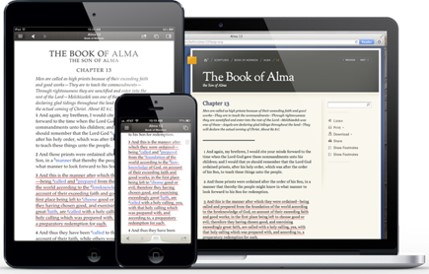
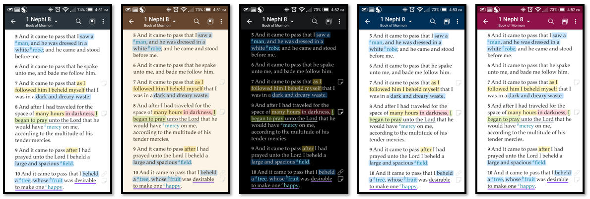
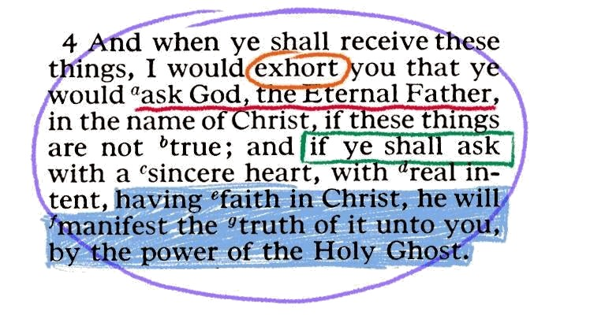
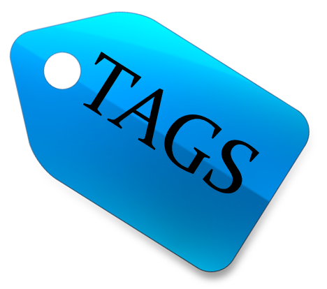
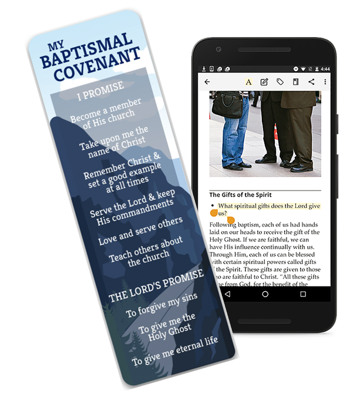
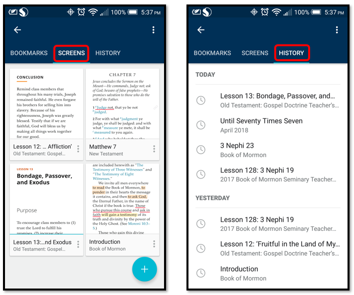

"I encourage all members to use the resources on the Church’s websites and mobile apps.
They are continually being refined so that they are easier to use and more relevant to our lives."
(Elder Robert D. Hales, October 2013 General Conference)
Gospel Library is the gospel study app of The Church of Jesus Christ of Latter-day Saints.
The library includes the scriptures, general conference addresses, music, learning and teaching manuals, Church
magazines, videos, audio recordings, gospel art, and more. I encourage you to study, search, mark, and share
this vast collection. On this webpage I will show you some of the great things that can be done with the Gospel Library App.
Customize

To customize is modify (something) to suit a particular individual or task. People customize the
cars they drive, the phones they use, the homes they live in, and the screens on their computers. The Gospel Library App
allows you to customize the app to better suit your needs. You can customize the screen background, language used, text
size, list mode, if footnotes are hidden, if screens are shown as separate windows, if obsolete content is shown, and
whether or not in-app notifications are allowed.
- To change your screen background, click on the 3 stacked dots and then select settings. Underneath Display,
tap on Theme. This will allow you to choose from five different screen backgrounds. Select the one you like.
The image above shows, in order, the themes: default, sepia, night, dark blue, and magenta.
- Some people like the words on their to appear big and some do not. Thankfully, Gospel Library allows you to
choose the text size you would like view. Tap on the 3 stacked dots on the home screen or screen you are in,
tap Settings, and scroll down and select Text Size. From there you can either increase or decrease the size of the text.
Scripture Marking

How to Mark
To mark, or highlight, a scripture or passage in Gospel Library, long press on the location
where you want to create a highlight. Use the sizing handles to expand or contract the highlighted area. Once you
have the area highlighted, tap on Mark to mark the highlighted area. The color and style of the marking will default
to the last or most recent highlight color and style. If you accidentally highlighted a word or phrase just tap anywhere
else on the screen and the action will be undone.
Once you have selected to mark the passage highlighted the toolbar will change the Mark function to the Style function
with an A above it. If you want to change the most recent highlight style, tap on the A to take you to the style guide.
From there you can change the color of your marking, select if you want your marking to be like a highlighter or underlined,
or create a clear highlight.
- Deleting Markings: If you mark text with a highlight and you want to remove it, tap on the selected passage to bring
up the marking toolbar. Just select the trash can icon - Remove - and the marking will be deleted. Please note that
any other annotations for the highlighted text, such as notes, tags, or links, will also be deleted.
- Clear Highlights: A clear highlight is just that, a highlight that is clear, that you can't see. These are good to use
when you just want to add a note or tag a passage that has already been tagged or for when you want a note to show but
not a marking. Just select the passage you want, select Mark, select Stlye, and choose the clear highlight. This will
take you back to your passage and toolbar. Now pick the note or tag and add your note or tag.
How to Tag

Tags might be thought of as categories. When you mark a scripture or passage you have the option of
tagging that scripture. This allows you to place similar scriptures or passages under the same tag or category. You can then
select your tag category and see all the references you have saved under that title. Tags are great to use because it helps
keep track of scriptures or passages you like and makes them easy to find.
To create a tag, tap the text you wish to tag and
use the selection handles to include all the desired text. Tap the Tag icon Tag Toolbar Icon (looks like a luggage rag) and
create a new tag by typing the tag title in the space provided, tapping + Create 'Tag Title,' and then tapping the check mark
to save it. To add an existing tag to a passage, select the text and click on the tag item. Start typing the name of the tag
and if it exists in the list of tags, it will float to the top of the list. You can also just scroll down to the tag you want.
Tap of the existing tag and the passage will be added to the tag. You can also add multiple tags to an item by selecting multiple
existing tags or by selecting the text again and repeating the tagging process.
Tagging Tips
- Begin now!
- Don't panic or get stuck on what tags to use at first. Just tag it with the first word that comes to mind. You can go
into the Notes section and edit your tags after you have done it for a while.
- Make your tag titles simple. Long phrases can become hard to remember. A two or three word tag that speaks to you is a great idea.
- Create a daily habit of tagging. Try to find something to tag every time you read. As you practice you get faster and
better at tagging and it is less of an interruption to your reading, it simply becomes a part of it.
- Don't forget to review your tags every once and a while.
How to Annotate
To annotate is to add notes to a scripture or passage. To annotate just select the text you would like to create a note for.
When the toolbar appears, select the Note Icon, (a box with a pencil in it). This will then bring up a screen where you can title and write in the
notes you would like. When done, click on the check mark to complete your note taking. Note: while in this screen you can add a tag by clicking on the Tag icon.
When a note has been created it will show a page with an upturned bottom corner next to where you created the note. Just tap on the note icon or go to
your footnotes to see the note with all footnotes.
To edit a note just select the highlight or select the new note icon on the side of the page and then select the pencil in the new screen. Just edit the
note how you would like and click on the check mark when done.
How to Link
To link is to connect one scripture or passage with another scripture or passage. It is creating cross-references with each other.
To create a link you must first select the text you would like to link. Once the text is selected the toolbar will appear. Select the Link icon.
Start typing in the name of the new place you would like to connect this link to. Find the passage you would like to link this to and tap on the check mark.
You will then see that a link has been created to the new passage. Tap on the check mark to confirm this. This will take you back to the original screen
where you will see two links connected to each other on the right side of the passage you just linked. This will also create a link on the other passage.
To edit a link, tap on the source text for the link and select the Link Icon. You can edit the link by deleting the previous link and then searching for a new one.
Deleting the link and clicking the check mark will delete the link.
Bookmarks

With so many resources available in Gospel Library it can be easy to lose your place. Gospel Library has done a great job in helping to
create multiple bookmarks to keep track of where you are. What are bookmarks? Bookmarks are links that point back to an entire article, lesson, conference address,
or scripture. Bookmarks don't point to specific passages, but rather to the page as a whole.
- Creating and Deleting Bookmarks: On each page of Gospel Library, a toolbar appears. One of the icons looks like a banner or ribbon; this is the bookmark icon.
Tap the bookmark icon and a
list of previously created bookmarks will appear. It will be empty if no bookmarks have been created. Let's say you are in your Sunday School class and are
studying the New Testamant. You want to follow the lessons in the teachers manual each week but do not want to have to find the lessons each time. Go to the
lesson you want to bookmark, tap on the bookmark icon and then tap on the add bookmark button (a plus sign). Select Add and the new bookmark will be created
and take you back to the page you just bookmarked. Bookmarks are placed at the top of the screen you just bookmarked. If you have verse 15 at the top of the
screen and create a bookmark, verse 15 is where the bookmark will be placed. To delete a bookmark, tap on the bookmark icon on the toolbar. Tap the 3 stacked
dots on the bookmark you want to delete and then tap the Delete option.
- Naming and Renaming Bookmarks: After you have created a new bookmark you can accept the default bookmark name (see image above) or create your own. There are
two ways to do so. When creating a new bookmark you can change the default name before you Add it (see image below). Just tap on the name, delete the default
name, and create your own. To rename a bookmark go to your bookmarks. Click on the 3 stacked dots of the bookmark you want to rename. Tap on Rename and then
change the name to what you want.
- Updating Bookmarks: Updating a bookmark moves the bookmark to the new location you choose. For example, you just finished the Sunday School lesson and swipe
to the next lesson. Instead of creating a new bookmark, you can update the bookmark already in place. To update a bookmark, go to your bookmarks and tap on the
3 stacked dots. From there tap on Update. This will then take you back to your previous screen with the updated bookmark ribbon on your screen. Bookmarks can
also be moved down the page. If you are reading a long scripture chapter and don't finish you can update the bookmark to where you left off. Just place the
scripture you want to start from at the top of the screen and update your bookmark.
- Reordering Bookmarks: You can reorder the list of bookmarks in your bookmark tab. Just press for a few seconds anywhere on the bookmark you want moved and while
holding move it up or down to rearrange
New Screens and History

The bookmark ribbon has more functions than just adding bookmarks. You can also add new screens and see your Gospel Library history. The Screens
function allows you to have multiple screens open at a time. It's like having a finger in one place in a book while flipping somewhere else. Screens don't sync between devices,
so if you want to have something marked permanently use bookmarks. To add a new screen from the Home page just tap the 3 stacked dots and then tap on New Screen.... You can
also add a new screen in the Bookmark tab. After going to the bookmark tab just tap on Screens. To delete, tap the 3 stacked dots on the bottom right of the screen you want to
delete and tap on delete. Tap on history and see what you have been doing. Click on any one the tabs and it will take you back to that scripture or article.
Search
It's hard to find something when you don't know where to look. Whether you've forgotten where a scripture is, can't remember a phrase President Russell
M. Nelson said, have a question you want answered, or have forgotten where to find the book of Habakkuk, the Search function in Gospel Library is here to help. The Search function
is the quickest way to move around the library, when properly understood.
Simplified Search
- Tap the Search button (magnifying glass) in the title bar.
- Enter a word or phrase. As you type, recent search terms that match your word or phrase appear. Tapping on any of these recent search terms copies it to the search
field. Note: If you want to search for an exact phrase, enclose the phrase in double quotes.
- Tap the searched item below or for a deeper search tap Enter when done.
- Results are grouped by collection and items within collections. The number of results in a collection are displayed to the right of the collection or item title.
(For more information on collections see #9 in Advanced Search)
Advanced Search
- To search a scripture reference, begin typing the reference in the Search field, such as "2 n..." and 2 Nephi will appear in the search suggestions below the
search field. A scripture reference may be entered as 2 Ne 5:7 or 2 Nephi 5... but not 2n5. Tap the 2 Nephi search to go straight there and from there drill down
into the chapter and verse you are seeking. If you continue typing the scripture reference, you will see search suggestions in all categories where it exists. Again
you will need to drill down to locate your scripture. This search is extremely helpful for finding those books in the Old Testament no one remembers.
- When you enter words in the search bar, it will look for any like terms you have used in the recent past and allow you to pick from a list and if not it will begin
looking in library categories. The first line below the bar will suggest just searching the area you are in, such as "Scriptures" or "Book of Mormon" or "2 Nephi."
If this is what you want to search, select the first suggestion category and the app will search only that area.
- Next, it will look any scripture or article containing one or more of the keywords you search for - ignoring words such as "and," "or," and "but," looking for similar
derivative words. If you searched for covenants, for instance, it will display "covenant," "covenants," and "covenanted."
- Search will also display any scripture where the search term appears within 10 words of each other. The image below shows examples of the phrase "the lamb of God"
and scriptures that have those words within 10 words of each other. Note: If you want to search for an exact phrase, enclose the phrase in double quotes. You will be
able to access the library category applicable from the search suggestions and then drill down into the particular book of scripture, or manual.
- When you perform a Search wait to tap Enter. Look at the suggested searches first. Tapping Enter ignores the search suggestions and performs a "deep" search that
looks in the content, so don't be too quick to committ. Note: Search only looks for downloaded content.
- Search is not limited to where you are in the manuals. In the image below a search was done in the Gordon B. Hinckley manual for Obedience. The first result suggests
finding the word in the manual you are in. The app will next suggest possible results in several categories besides the Gordon B. Hinckley manual.
- If you are searching for the word tight within a chapter or article, you will see "Find "tight" on page" come up at the top of the search suggestions. When you select
this Search will show the search term highlighted as many places in the article where it exists. A bar at the bottom with up/down arrows will help you navigate from one
instance to the next.
- Search will also search in your notes for a search term. You may need to scroll down the Search results until you see an icon that looks like a page with a turned corner
to look specifically at searches in Notes.
- Generally, search results are grouped by collection and items within collections. Collections are groups or categories where the searched term can be found. The image below
show examples of collections for the search "lamb of God." The collections are: Scriptures, Individuals and families, Sunday School, and so forth. Collection items are the
results in the collection. The number of results in a collection is displayed to the right of the collection item title. When searching in the app, if Search results are for
a catalog item that is not downloaded, a message box should, but not always, alert you to download the catalog item.
- You may use dates in Searches if you enter the month written out and not abbreviated. If you use a date such as October 2017, you will get Magazines, but you won't get Conference
for 2017 even if it is downloaded. It is better to open the Conference category and search for the content there.